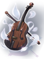
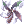

Sky Fortress
| This quest or instance is repeatable. | ||
|---|---|---|
| Cooldown | Tickets Available | |
|
3 days |
Solo: 1 | Party: 2 |
Overview
| Requirements | |
|---|---|
| Base Level: | 145 |
| Starting Point: | - |
| Prerequisite(s): | Banquet of Heroes (Room of Consciousness) |
| Rewards | |
| Experience: | - |
| Items: | - |
The Sky Fortress instance is part of the Episode 16.1, check out the Banquet for Heroes for more information. Prerequisites must be completed for each character.
To gain access to the instance, you must have access to Invaded Prontera. Head to the bottom right corner of Invaded Prontera map and talk to Scientist Doyeon.
Walkthrough
Preparation: Bring Tokens of Siegfried in case your party is wiped, and prepare a party that can deal with the MVP's Hallucination Walk.

- Once inside, talk to Stefan J.E. Wolf to trigger the dialogue.
- A weak version of the MVP will appear, followed by several waves of Immortal Zombie Soldiers. Kill them to continue.
- Talk to Stefan J.E. Wolf again to open the portal to the staircase area.
- Going up the mob-infested staircase, there will be several locked doors along the way. You can open them using Sky Fortress Keys.
- Entering the doors will bring you to one of several rooms filled with monsters. At the end of each room, there's either a boss monster or a Treasure Chest.
- At the top of the staircase area is the MVP room. Walk north and talk to Stefan J.E. Wolf to begin the MVP battle.
- During the fight, numerous Immortal Cursed Zombies and Immortal Zombie Soldiers will spawn periodically. You can pull the MVP and fight it in a corner to avoid luring too many of the lesser mobs
- Additionally, once the MVP is below a certain HP, numerous Earthquakes will happen all over the room, each preceded by a purple splash effect 3 seconds prior. Keep an eye out for the splashes, and reposition immediately if it appears near your character.
- Once you've defeated the MVP, you can leave the instance using the escape portal in the middle of the room.
Extra One Hour Ticket System
When you do this instance each 3 days, if you reach the final room of the instance where you've to fight Stefan (you don't need to kill the MVP, just enter the room), you gain access to a ticket (real item that stays in your inventory) from the NPC that opens the warp to Sky Fortress. With this ticket in your inventory you can start this instance as many times as you want for a single hour. This means that you may enter the instance with a few seconds from the item being removed from your inventory and still clear that last run even if the item disappeared in the middle of it.
Note - If you right click the ticket it will show the end of this extra hour based on your local time.
Enemies
| Image | Name | Level | HP | Size / Race / Element |
|---|---|---|---|---|
| Immortal Zombie Soldier | 160 | 405,694 | Medium / Undead / Undead 2 | |

|
Sky Fortress Key Keeper | 160 | 423,332 | Medium / Undead / Undead 2 |

|
Immortal Zombie Assault | 160 | 405,694 | Medium / Undead / Undead 2 |

|
Immortal Cursed Zombie | 160 | 405,694 | Medium / Undead / Undead 2 |
| Immortal Fortress Legion | 160 | 405,694 | Medium / Undead / Undead 2 | |
| Immortal Nightmare Shadow | 160 | 423,330 | Large / Demon / Dark 1 | |
| Immortal Angry Shadow | 160 | 423,330 | Medium / Demon / Dark 1 | |
| Immortal Death Shadow | 160 | 423,330 | Medium / Demon / Dark 1 | |
| Immortal Cursed Knight | 160 | 7,000,000 | Large / Formless / Dark 2 | |
| Immortal Wind Ghost | 160 | 7,000,000 | Medium / Demon / Wind 2 | |

|
Stefan.J.E.Wolf | 160 | 20,000,000 | Large / Undead / Undead 1 |
Cards
| Card | Type | Description |
|---|---|---|
| Weapon Card | ATK +10%.
Has 2% chance of autocasting Ignition Break Lv 5 on a target when performing physical attacks. If equipped with Stephen Jack Ernest Wolf Card, ASPD +1. | |
| Weapon Card | MATK +10%.
Has 1% chance of autocasting Killing Cloud Lv 5 on a target when performing magical attacks. If equipped with Stephen Jack Ernest Wolf Card, reduce Variable Cast Time by 10%. | |
| Footgear Card | Has 3.5% chance of autocasting Fire Walk Lv 5 on the wearer when receiving physical attacks.
Has 8% chance of autocasting Electric Walk Lv 5 on the user when receiving magical attacks. Has 3% chance of gaining Flee +200 for 10 seconds when performing physical attacks. Has 2.5% chance of gaining increased Movement Speed when performing magical attacks. If equipped with Immortal Cursed Knight Card, ASPD +1. If equipped with Immortal Wind Ghost Card, reduce Variable Cast Time by 10%. |
Vicious Weapons
Vicious Weapons are dropped from the monsters inside the Sky Fortress instance. Similar to Crimson Weapons, they gain a substantial amount of ATK/MATK with higher refines, up to +15.
| Image | Name | Description | Dropped by |
|---|---|---|---|

|
Vicious Mind Book [1] |
90 ATK Atk + (upgrade level * upgrade level) up to a maximum upgrade level of 15. |
Immortal Zombie Assault |
| Vicious Mind Bow [1] | 170 ATK
Atk + (upgrade level * upgrade level) up to a maximum upgrade level of 15. |
Immortal Cursed Zombie | |
| Vicious Mind Dagger [1] |
105 ATK Atk + (upgrade level * upgrade level) up to a maximum upgrade level of 15. |
Immortal Fortress Legion | |
| Vicious Mind Huuma Shuriken [1] | 105 ATK
Atk + (upgrade level * upgrade level) up to a maximum upgrade level of 15. |
Immortal Zombie Assault | |
| Vicious Mind Katar [1] | 180 ATK
Atk + (upgrade level * upgrade level) up to a maximum upgrade level of 15. |
Immortal Fortress Legion | |
| Vicious Mind Knuckle [1] | 150 ATK
Atk + (upgrade level * upgrade level) up to a maximum upgrade level of 15. |
Immortal Zombie Assault | |
| Vicious Mind Lance [1] | 225 ATK
Atk + (upgrade level * upgrade level) up to a maximum upgrade level of 15. |
Immortal Zombie Assault | |
| Vicious Mind Mace [1] | 130 ATK
Atk + (upgrade level * upgrade level) up to a maximum upgrade level of 15. |
Immortal Zombie Assault | |
| Vicious Mind Revolver [1] | 150 ATK
Atk + (upgrade level * upgrade level) up to a maximum upgrade level of 15. |
Immortal Cursed Zombie | |
| Vicious Mind Rod [1] | Int + 5
Matk + 120 Additional Matk + (upgrade level * upgrade level) up to a maximum upgrade level of 15. |
Immortal Cursed Zombie | |
| Vicious Mind Saber [1] | 135 ATK
Atk + (upgrade level * upgrade level) up to a maximum upgrade level of 15. |
Immortal Fortress Legion | |
| Vicious Mind Spear [1] | 140 ATK
Atk + (upgrade level * upgrade level) up to a maximum upgrade level of 15. |
Immortal Fortress Legion | |
| Vicious Mind Two-Handed Staff [1] | Int + 6
Matk + 200 Additional Matk + (upgrade level * upgrade level) up to a maximum upgrade level of 15. |
Immortal Cursed Zombie | |
| Vicious Mind Two-Handed Axe [1] | 250 ATK
Atk + (upgrade level * upgrade level) up to a maximum upgrade level of 15. |
Immortal Cursed Zombie | |
| Vicious Mind Two-Handed Sword [1] | 220 ATK
Atk + (upgrade level * upgrade level) up to a maximum upgrade level of 15. |
Immortal Fortress Legion | |
|  | Vicious Mind Violin [1] | 130 ATK
Atk + (upgrade level * upgrade level) up to a maximum upgrade level of 15. |
Immortal Angry Shadow |
| Vicious Mind Wire [1] | 130 ATK
Atk + (upgrade level * upgrade level) up to a maximum upgrade level of 15. |
Immortal Nightmare Shadow |
Bonus Enchants

Each of these weapons come with 3 Bonus Enchants which are randomly determined. Keep in mind that these bonuses vary greatly, so you will need to inspect each new item one by one to see if they are worthwhile to you or not.
Vicious Mind Enchants
| Weapon | First Enchant | Second Enchant | Third Enchant |
|---|---|---|---|
|
Vicious Mind Two-Handed Sword [1]
|
|
|
|
|
 Vicious Mind Huuma Shuriken [1]
|
|
|
|
|
Vicious Mind Two-Handed Axe [1]
|
|
|
|
|
|
|
|
|
|
|
|


Race/Element Enchants
| Enemy [element]'s | Weapon property [element]'s | Enemy [race]'s |
|---|---|---|
|
|
|
Re-rolling Vicious Enchants
You can re-roll the enchants of Vicious Mind weapons (prt_q 238/72), making it easier to get a desirable weapon after refining.
The weapon that will get its enchants re-rolled must be equipped. Enchanting the weapon keeps the refinement level and has no chance to break
A full re-roll of all 3 enchants will have the following cost:
- 1x Vicious Mind Weapon (Any)
- 100,000 Zeny
Keeping a single enchant safe and re-rolling the other two will have the following cost:
- 1x Vicious Mind Weapon (Same type as the item being re-rolled)
- 2,000,000 Zeny
In both options, the refinement level of the equipped weapon and the card compounded won't be affected.
You cannot use a Vicious Mind weapon that has been refined past +7 as a catalyst for re-rolling.